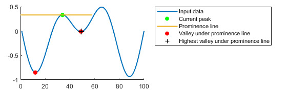
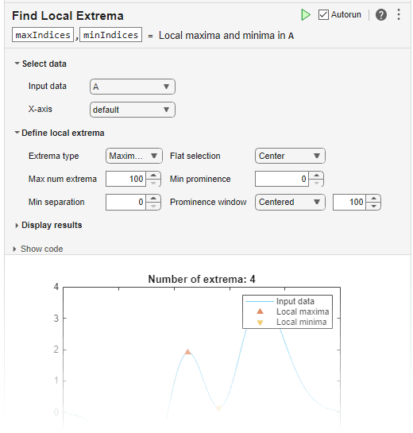

islocalmax
Find local maxima
Syntax
Description
TF = islocalmax(A)true) when a local
maximum is detected in the corresponding element of A.
You can use islocalmax functionality interactively by adding
the Find Local
Extrema task to a live script.
TF = islocalmax(___,Name,Value)islocalmax(A,'SamplePoints',t) finds local maxima of
A with respect to the time stamps contained in the time
vector t.
[
also returns the prominence corresponding to each element of TF,P] = islocalmax(___)A.
Examples
Compute and plot the local maxima of a vector of data.
x = 1:100;
A = (1-cos(2*pi*0.01*x)).*sin(2*pi*0.15*x);
TF = islocalmax(A);
plot(x,A,x(TF),A(TF),'r*')
Create a matrix of data, and compute the local maxima for each row.
A = 25*diag(ones(5,1)) + rand(5,5); TF = islocalmax(A,2)
TF = 5×5 logical array
0 0 1 0 0
0 1 0 0 0
0 0 1 0 0
0 1 0 1 0
0 1 0 0 0
Compute the local maxima of a vector of data relative to the time stamps in the vector t. Use the MinSeparation parameter to compute maxima that are at least 45 minutes apart.
t = hours(linspace(0,3,15)); A = [2 4 6 4 3 7 5 6 5 10 4 -1 -3 -2 0]; TF = islocalmax(A,'MinSeparation',minutes(45),'SamplePoints',t); plot(t,A,t(TF),A(TF),'r*')

Specify a method for indicating consecutive maxima values.
Compute the local maxima of data that contains consecutive maxima values. Indicate the maximum of each flat region based on the first occurrence of that value.
x = 0:0.1:5; A = min(0.75, sin(pi*x)); TF1 = islocalmax(A,'FlatSelection','first'); plot(x,A,x(TF1),A(TF1),'r*')

Indicate the maximum of each flat region with all occurrences of that value.
TF2 = islocalmax(A,'FlatSelection','all'); plot(x,A,x(TF2),A(TF2),'r*')

Select maxima based on their prominence.
Compute the local maxima of a vector of data and their prominence, and then plot them with the data.
x = 1:100; A = peaks(100); A = A(50,:); [TF1,P] = islocalmax(A); P(TF1)
ans = 1×2
1.7703 3.5548
plot(x,A,x(TF1),A(TF1),'r*') axis tight

Compute only the most prominent maximum in the data by specifying a minimum prominence requirement.
TF2 = islocalmax(A,'MinProminence',2); plot(x,A,x(TF2),A(TF2),'r*') axis tight

Input Arguments
Name-Value Arguments
Output Arguments
Algorithms
islocalmax identifies all local maxima (or peaks) in the input
data and follows these steps to compute the prominence of each local maximum. The
prominence of a local maximum measures how the peak stands out with respect to its
height and location relative to other peaks.
Draw a horizontal line to the left and right from the current peak. Stop drawing each segment of the horizontal line when it reaches the edge of the data or intersects the data.
Identify the valleys under the horizontal line.
Use the highest of those valleys as the basis value. The prominence is the absolute difference between the height of the current local maximum and the basis value.

Alternative Functionality
Live Editor Task
You can use islocalmax functionality interactively by adding
the Find Local
Extrema task to a live script.
